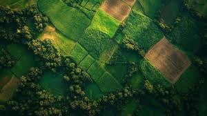

WELCOME TO SMARTKRISHI AI+
Real-time satellite monitoring, AI-powered analysis and smart farming insights.
Choose your analysis method
OR
Advanced AI technology combined with satellite intelligence to make farming smarter, faster and more accurate.
Get real-time satellite imagery and monitor your farmland with precision.
Search any village or city and instantly start AI-powered analysis.
Detect crop stress, diseases and health using Artificial Intelligence.
Download detailed reports with recommendations for better farming.
Real-time farm insights generated using AI and satellite analysis.
View your farm location and AI-generated analysis on the map.

🟢 Healthy
68%
31°C
Low
Live weather conditions and AI recommendations for better farming decisions.
Analyze your farmland in just four simple steps.
Search your village or use your current location to select the farmland.
AI processes satellite imagery and identifies crop conditions.
Detect diseases, crop health and moisture using Artificial Intelligence.
Download a detailed report with recommendations for better farming.
Artificial Intelligence recommends the best crop based on soil, weather and satellite analysis.
Suitability Score
AI Confidence